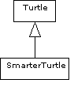
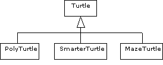
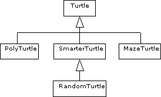

Sammanfattningsvis kommer vi att diskutera följande saker idag:
SimpleWindow kan vi välja om vi vill ge fönstret ett namn
eller inte, klassen har två konstruktorer: specification SimpleWindow {
/**
* Skapar ett fönster med given storlek och rubriken "SimpleWindow".
*/
public SimpleWindow(int width, int height);
/**
* Skapar ett fönster med given storlek och given rubrik.
*/
public SimpleWindow(int width, int height, String name);
// ...
}
Vi kan alltså skriva SimpleWindow w = new SimpleWindow(600,600);för att få ett fönster med rubriken "SimpleWindow", eller
SimpleWindow w = new SimpleWindow(600,600,"Sköldpaddsfönster");för att få ett fönster med rubriken "Sköldpaddsfönster".
I klassen RandomNumberGenerator finns det bland annat två
operationer med följande specifikation:
specification RandomNumberGenerator {
/**
* Ger ett reellt slumptal mellan 0 och 1.
*/
double randDouble();
/**
* Ger ett reellt slumptal mellan low och max.
*/
double randDouble(double low, double max);
}
För att få ett reellt slumptal mellan 0 och 1 och ett mellan 10 och 20 kan
vi skriva RandomNumberGenerator rng = new RandomNumberGenerator();
double
rnd1 = rng.randDouble(),
rnd2 = rng.randDouble(10,20);
Vi kan alltså ha flera operationer i samma klass som har samma namn, det
gäller både konstruktorer och vanliga operationer.
Ur Javas synvinkel är det som betyder något operationernas signatur,
dvs deras namn plus typerna på deras parametrar. Den första
randDouble-operationen ovan har inga parametrar alls, den har
därför signaturen randDouble(). Den andra operationen har två
reella parametrar, och har därför signaturen
randDouble(double,double). Namnen på parametrarna saknar betydelse
för signaturen, och anges därför inte.
Om två operationer har samma namn, men olika signatur, säger vi att vi har två överlagrade operationer (overloaded på engelska). Vi får i en klass ha hur många operationer som helst med samma namn, så länge operationerna har olika signaturer.
Ofta är det enkelt att implementera överlagrade operationer med hjälp av
varandra, om vi exempelvis vill införa en operation void left() i
klassen Turtle, för att vrida sköldpaddan precis 90 grader åt
vänster, kan vi skriva:
class Turtle {
private int direction;
// ...resten av attributen...
public void left(int angle) {
this.direction += angle; // som tidigare
}
public void left() {
this.left(90);
}
// ...resten av klassen...
}
dvs vi anropar operationen left(int) på samma sköldpadda, med
inparametern 90.
Även överlagrade konstruktorer är ofta enkla att implementera, om vi vill ha
en konstruktor som skapar en sköldpadda mitt i ett fönster (då behöver vi inte
skicka in x- och y-koordinater), så kan vi skriva (observera att denna
konstruktor inte finns i den Turtle-klass som finns i kurspaketet):
class Turtle {
/**
* Skapar en sköldpadda i en given position i ett givet fönster.
*/
public Turtle(SimpleWindow w, int x, int y) {
this.w = w;
this.jumpTo(x,y);
this.penUp();
this.turnNorth();
}
/**
* Skapar en sköldpadda mitt i ett givet fönster.
*/
public Turtle(SimpleWindow w) {
this(w,w.getWidth()/2,w.getHeight()/2);
}
// ...övriga operationer...
}
Därefter kan vi skapa en sköldpadda mitt i ett fönster genom att skriva: SimpleWindow w = new SimpleWindow(600,600);
Turtle t = new Turtle(w);
Lägg märke till att man inne i den andra konstruktorn skriver
this(...) för att anropa den första konstruktorn, den med
signaturen this(SimpleWindow,int,int). Vi skriver inte
Turtle(...), som många tror. Vi kommer senare idag att se en annan
konstruktion som liknar denna.
Vi hade naturligtvis kunnat implementera konstruktorerna oberoende av varandra:
class Turtle {
/**
* Skapar en sköldpadda i en given position i ett givet fönster.
*/
public Turtle(SimpleWindow w, int x, int y) {
this.w = w;
this.jumpTo(x,y);
this.penUp();
this.turnNorth();
}
/**
* Skapar en sköldpadda mitt i ett givet fönster.
*/
public Turtle(SimpleWindow w) {
this.w = w;
this.x = w.getWidth()/2;
this.y = w.getHeight()/2;
this.jumpTo(x,y);
this.penUp();
this.turnNorth();
}
// ...övriga operationer...
}
men det vore klumpigt, i synnerhet som det är lätt hänt att man glömmer
att uppdatera någon av konstruktorerna om vi ändrar starttillståndet lite (om vi
istället vill att sköldpaddan skall starta med pennan nere måste vi ändra i båda
konstruktorerna om vi inte anropar den ena från den andra).
dvs vi multiplicerar fröet med 147 och kastar bort heltalssiffrorna.
Utgående från fröet är det sedan enkelt att generera rektangelfördelade tal i olika intervaller.
Exempel på specifikation:
specification RNG {
/**
* Skapar en slumptalsgenerator med givet frö.
*/
RNG(double seed);
/**
* Skapar en slumptalsgenerator med slumpmässigt frö.
*/
RNG();
/**
* Ger ett rektangelfördelat reellt värde mellan 0 och 1.
*/
double randDouble();
/**
* Ger ett rektangelfördelat reellt värde mellan low och high.
*/
double randDouble(double low, double high);
/**
* Ger ett rektangelfördelat heltal mellan 0 och high.
*/
int randInt(int high);
/**
* Ger ett rektangelfördelat heltal mellan low och high.
*/
int randInt(int low, int high);
}
Det slumpmässiga fröet i den andra konstruktorn kan du hämta med
hjälp av operationen double Math.random(), dvs du får ett
slumpmässigt double-värde genom att skriva x = Math.random();
Tips:
Math.floor(...). private.
En anledning var att vi ville avlasta användaren från detaljer, en annan att vi
ville se till att objektens tillstånd alltid hölls under kontroll (om ett
attribut är publikt kan det ändras utifrån, och vi kan inte hindra användaren
från att ge det vilket värde som helst).
Det finns emellertid fler skäl att skydda sina attribut, ibland är det till exempel inte helt självklart vilka tillståndsvariabler vi skall använda. Om vi kapslar in våra attribut på ett lämpligt sätt kan vi faktiskt ofta byta tillståndsrepresentation utan att användaren märker något, så länge klasspecifikationen inte ändras.
Antag exempelvis att vi vill representera komplexa tal i våra program. Java innehåller i sig själv ingen typ för komplexa tal (bara för heltal och reella tal), så vi får skriva en egen klass.
En enkel klasspecifikation kunde vara:
specification Complex {
public Complex(double re, double im);
public double getRe();
public double getIm();
public double getMagnitude();
public double getArgument();
public void setCartesian(double re, double im);
public void setPolar(double magnitude, double argument);
public Complex add(Complex other);
public Complex subtract(Complex other);
public Complex multiply(Complex other);
public Complex divide(Complex other);
public Complex exp(double x);
}
Vi kan med hjälp av denna klass skriva: Complex
zero = new Complex(0,0),
i = new Complex(0,1),
z1 = new Complex(1,1),
z2 = new Complex(-1,3),
z3, z4, z5;
z3 = z1.multiply(z2);
z4 = z3.add(z1.multiply(i));
System.out.println("Realdelen av z4 är " + z4.getRe());
Frågan är vilka tillståndsvariabler vi skall välja när vi implementerar
klassen. Det finns åtminstone två naturliga val, antingen representerar vi våra
komplexa tal på cartesisk form (med real- och imaginärdelar), eller på polär
form (med belopp och argument). Vilket som är bäst beror på vilka operationer
som kommer att användas mest, om användaren kommer att addera och subtrahera mer
än hon multiplicerar och dividerar är det lämpligt att använda cartesisk form,
om det är vanligare med multiplikation, division och exponentiering är den
polära formen effektivare.
Konstruktorn i exemplet antyder att vi använder cartesisk form internt, tyvärr kan vi inte ha de båda konstruktorerna
public Complex(double re, double im);
public Complex(double magnitude, double argument);
eftersom de har samma signatur (Complex(double, double)). Om
några veckor skall vi se hur vi kan skapa alternativ till dessa två
konstruktorer och göra klassen betydligt elegantare.
Men att konstruktorn antyder det innebär inte att vi måste använda cartesisk form internt, vi kan välja vilken form vi vill, och eftersom användaren aldrig ser attributen (de är privata) så kommer hon aldrig att märka ens om vi byter representation. Programraderna ovan fungerar precis lika bra oavsett om vi väljer att internt arbeta i cartesisk eller polär form.
Hade vi däremot gjort real- och imaginärdel till publika attribut hade klassen blivit svår att underhålla om vi bestämmer oss för att använda polär form i den interna representationen.
add(Complex) i klassen Complex som: public Complex add(Complex other) {
return new Complex(this.getRe() + other.getRe(), this.getIm() + other.getIm());
}
så behöver vi inte skriva om operationen ens om vi byter mellan cartesisk
och polär form. Hade vi däremot skrivit public Complex add(Complex other) {
return new Complex(this.re + other.re, this.im + other.im);
}
hade vi varit tvungna att skriva om operationen vid byte av
tillståndsvariabler till polär form.
Detta är naturligtvis ingen stor sak i detta lilla exempel, men i ett större exempel kan det vara betydelsefullt. (I detta lilla exempel medför de extra anropen ett visst merarbete för datorn, men det är ofta försumbart.)
Complex med attributen på cartesisk
form, dvs
private double re, im;
Complex med attributen på polär form,
dvs
private double magnitude, argument;
Turtle kan vi till exempel lägga till
operationer för:
Turtle att:
I Java (och alla andra riktiga objektorienterade språk) finns en mekanism med vars hjälp vi kan strukturera våra klasser, och dela upp dem så att de inte blir för klumpiga. Denna mekanism kallas utvidgning av klasser eller ärvning, och är jämte inkapsling ett av de viktigaste begreppen inom den objektorienterade programmeringen.
Vi kan konstatera att den ursprungliga klassen Turtle fungerade
bra för våra program under läsperiod 2, vi kan därför behålla den som den är
(den räcker i många sammanhang). När vi sedan vill ha en smartare sköldpadda,
som exempelvis kan avgöra om den befinner sig innanför sitt fönster och bestämma
avståndet till andra sköldpaddor, så skapar vi en ny, något utvidgad klass,
SmarterTurtle, som har alla egenskaper som klassen
Turtle hade, och några till:
class SmarterTurtle extends Turtle {
// här deklarerar vi utvidgningarna av Turtle-klassen
}
Vi får på så vis en ny klass, SmarterTurtle, som har alla
attribut och operationer som fanns i klassen Turtle, dessutom kan
vi lägga till nya attribut och operationer.
Vi säger att klassen SmarterTurtle är en subklass till
klassen Turtle, som i sin tur sägs vara superklass, eller
faderklass till klassen SmarterTurtle.
Schematiskt ritas klasserna ofta på följande sätt (UML):

class SmarterTurtle extends Turtle {
public SmarterTurtle(SimpleWindow w, int x, int y) {
super(w,x,y);
}
public boolean insideWindow() {
return
1 <= this.getX() && this.getX() <= this.getWindow().getWidth() &&
1 <= this.getY() && this.getY() <= this.getWindow().getHeight();
}
public double distanceTo(Turtle otherTurtle) {
int dx = this.getX() - otherTurtle.getX(),
dy = this.getY() - otherTurtle.getY();
return Math.sqrt(dx*dx + dy*dy);
}
public void randomStep(int minStep, int maxStep) {
RandomNumberGenerator rng = new RandomNumberGenerator();
this.left(rng.randInt(0,359));
this.forward(rng.randInt(minStep,maxStep));
}
}
(Här har jag fuskat lite, och till klassen Turtle lagt
operationen getWindow() som ger en referens till det fönster
sköldpaddan ritar i.)
Konstruktorn är lite speciell, vi vill bara skapa en sköldpadda på samma sätt
som vi skapade en vanlig Turtle, så vi anropar konstruktorn i
superklassen genom att skriva super och ange parametrar i samma
ordning som vi gjorde när vi anropade konstruktorn till Turtle
utifrån - jämför detta med hur vi anropade en överlagrad konstruktor i samma
klass genom att skriva this(...).
Inne i klassen SmarterTurtle har vi tillgång till allt som är
deklarerat som public inne i klassen Turtle, däremot
kan vi inte använda de attribut och operationer som är deklarerade som
private (se dock nedan).
När vi i operationen insideWindow() skriver
this.getX() anropar vi operationen getX() som denna
SmarterTurtle 'ärvt' från klassen Turtle - den nya
klassen har alltså alla de operationer som finns i faderklassen, och vi kommer
åt dem på samma sätt som tidigare.
Ett program som löser uppgift P7-1 kan med hjälp av klassen
SmarterTurtle skrivas:
SimpleWindow w = new SimpleWindow(600,600);
SmarterTurtle
t1 = new SmarterTurtle(w,250,250),
t2 = new SmarterTurtle(w,350,350);
t1.penDown();
t2.penDown();
while (t1.insideWindow() && t2.insideWindow() && t1.distanceTo(t2) > 50) {
t1.randomStep(1,5);
t2.randomStep(1,5);
}
Som framgår kan vi använda både de operationer vi ärvt ned
(penDown()) och de som vi lagt till (insideWindow()
etc).
Det finns flera viktiga fördelar med ärvning, bland dem:
protectedprivate, som gömmer attribut och operationer för alla, utom
för operationerna i den egna klassen, och
public, som gör attribut och operationer allmänt
tillgängliga. protected, som gömmer attribut och operationer för alla, utom
för operationerna i den egna klassen, och dess subklasser.
protected kan
alltså användas från den egna klassen och dess subklasser, men inte någon
annanstans ifrån.
I klassen Turtle hade det varit bekvämt att ha samtliga attribut
deklarerade som protected (så är de deklarerade i
se.lth.cs.pt.turtle.Turtle), så att vi i våra subklasser direkt
hade kunnat använda attributen.
(Det är dock inte alldeles självklart att alla attribut skall vara
deklarerade som protected, genom att skydda dem med
private och låta även subklasserna använda
get...-operationer för att komma åt dem gör vi klasserna något
flexiblare - se avsnittet om byte av tillståndsvariabler.)
Turtle, vi skulle kunna ha
PolyTurtle för att rita polygoner (se nästa veckas övning),
MazeTurtle för att gå i labyrinter (se nästa veckas övning),

SmarterTurtle till en klass
RandomTurtle. För att RandomTurtle skall få tillgång
till insideWindow() och
distanceTo(Turtle)-operationerna bör denna klass ärva från
SmarterTurtle, alltså:

Vi gör det genom att skriva:
class SmarterTurtle extends Turtle {
public SmarterTurtle(SimpleWindow w, int x, int y) {
super(w,x,y);
}
public boolean insideWindow() {
return
1 <= this.getX() && this.getX() <= this.getWindow().getWidth() &&
1 <= this.getY() && this.getY() <= this.getWindow().getHeight();
}
public double distanceTo(Turtle otherTurtle) {
int dx = this.getX() - otherTurtle.getX(),
dy = this.getY() - otherTurtle.getY();
return Math.sqrt(dx*dx + dy*dy);
}
}
class RandomTurtle extends SmarterTurtle {
private RandomNumberGenerator rng;
public RandomTurtle(SimpleWindow w, int x, int y) {
super(w,x,y);
this.rng = new RandomNumberGenerator();
}
public void randomStep(int minStep, int maxStep) {
this.left(this.rng.randInt(0,359));
this.forward(this.rng.randInt(minStep,maxStep));
}
}
där vi samtidigt gör slumptalsgeneratorn i randomStep() till
ett attribut (så slipper vi skapa en ny vid varje steg).
Slumptalsgeneratorn måste initieras i konstruktorn, och det måste göras efter
att vi anropat super(...). Om vi gör ett anrop av en konstruktor i
faderklassen (om vi inte själva gör ett anrop anropas automatiskt en konstruktor
som gör att faderklassens alla attribut nollställs) så måste anropet alltid
göras först i vår egen konstruktor. Anledningen till detta är att alla ärvda
attribut måste få lämpliga startvärden innan vi kan initiera vårt objekt.
Med klassen RandomTurtle given blir huvudprogrammet ovan nu
istället:
SimpleWindow w = new SimpleWindow(600,600);
RandomTurtle
t1 = new RandomTurtle(w,250,250),
t2 = new RandomTurtle(w,350,350);
t1.penDown();
t2.penDown();
while (t1.insideWindow() && t2.insideWindow() && t1.distanceTo(t2) > 50) {
t1.randomStep(1,5);
t2.randomStep(1,5);
}
Nu skulle inte en SmarterTurtle kunna göra
randomStep eftersom denna operation är deklarerad först nere i
RandomTurtle.
Vi kommer under resten av kursen att se många fler exempel på klasshierarkier av detta slag. Nästa vecka fortsätter vi diskutera ärvning, bland annat hur man kan göra för att modifiera operationer som ärvs ner.
private och sedan ha
en get..() och en set...(..)--operation för att
hämta och ändra värdet. Grundidén i MVC är att man delar upp sitt program i tre delar:
Strukturen på Life-uppgiften följer precis MVC-modellen, vi har
två klasser som beskriver en modell för Life-spelet:
Board, som beskriver en spelplan
LifePlayer, som beskriver reglerna för "spelet" Vi har dessutom en klass LifeView som ritar ut ett bräde i ett
fönster, denna klass utgör View-delen av programmet.
Slutligen har vi ett huvudprogram i vilket vi skapar objekt och ser till att spelplanen uppdateras och att brädet skrivs ut på skärmen när det uppdaterats. Huvudprogrammet utgör "Controllern" i vårt program.
Detta mönster kommer att återkomma under samtliga återstående övningar i kursen.